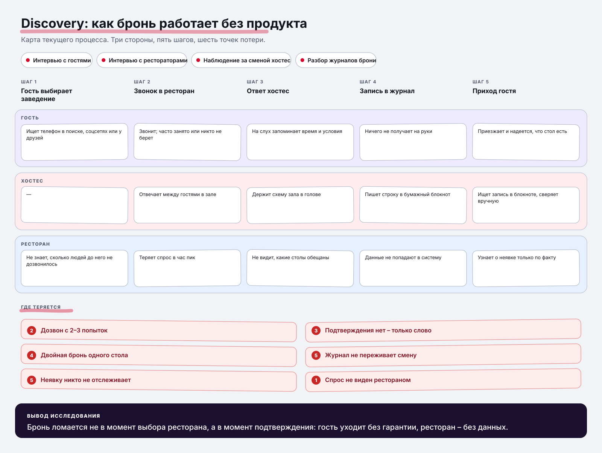
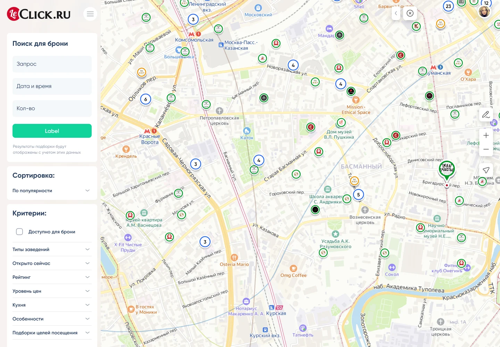
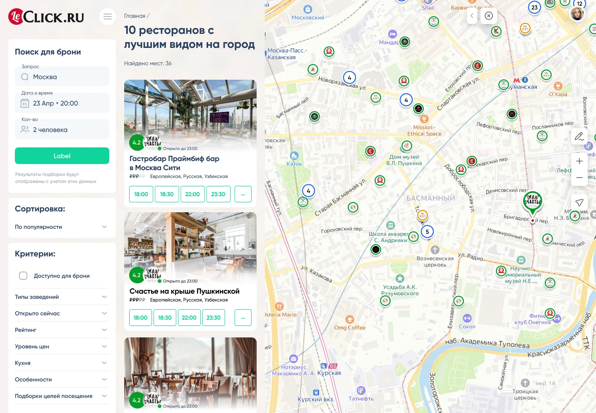
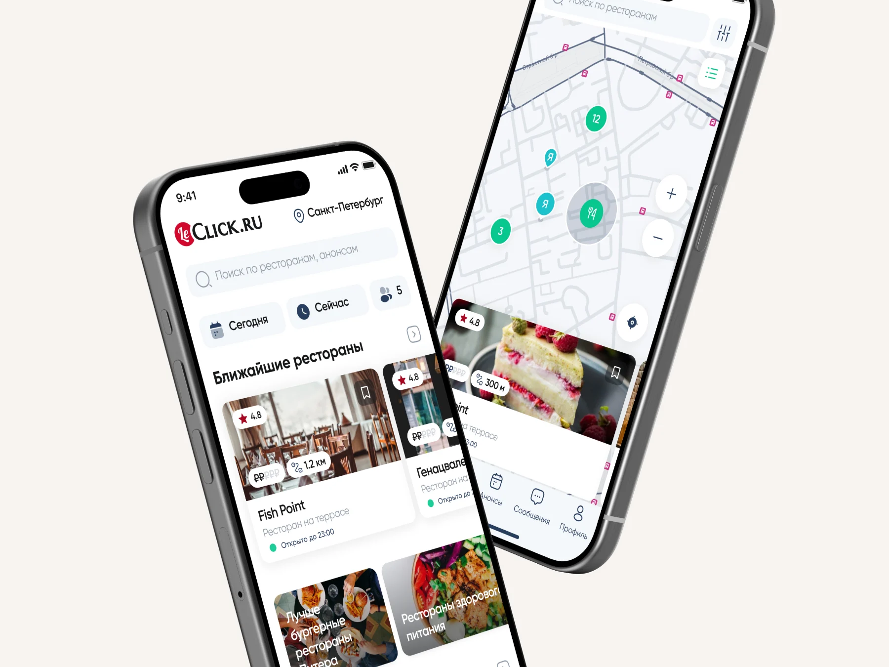
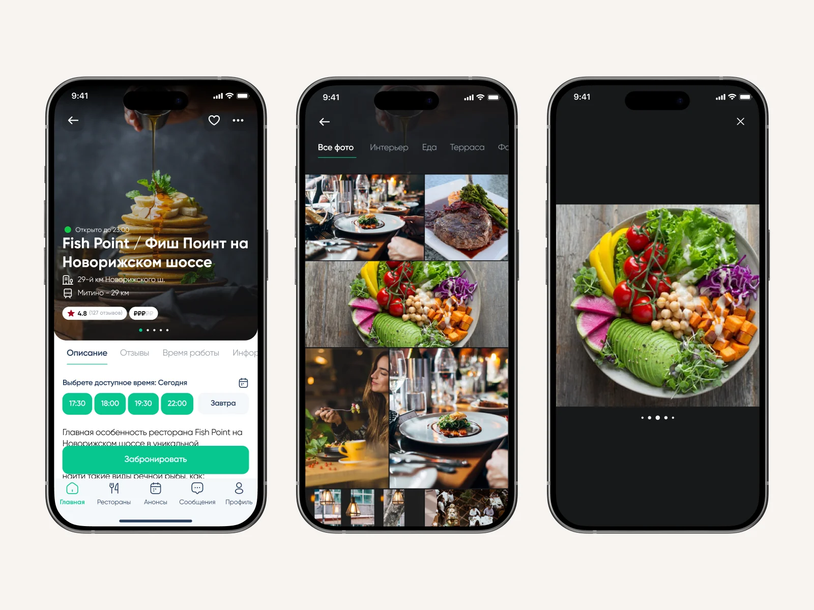
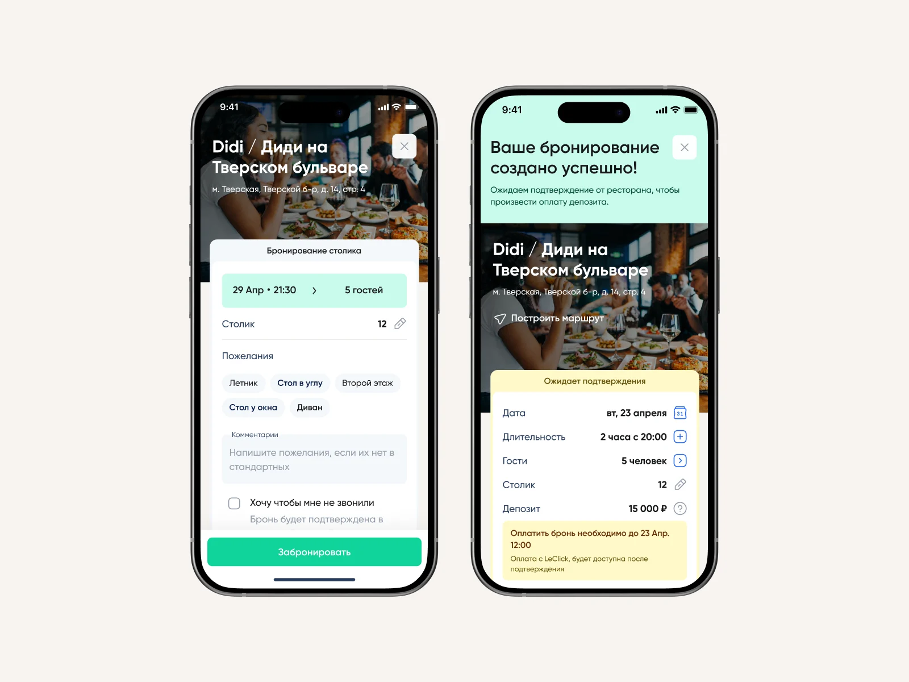
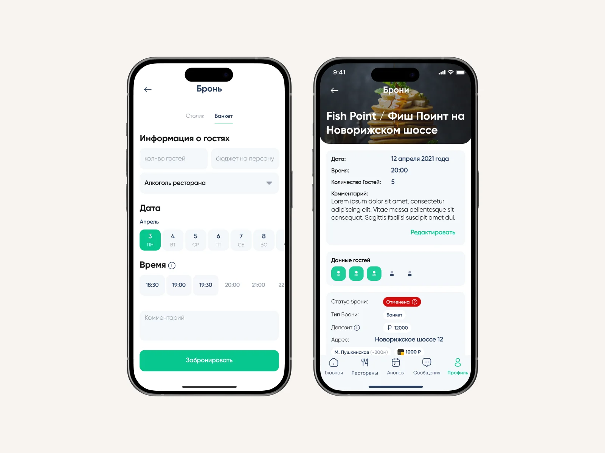
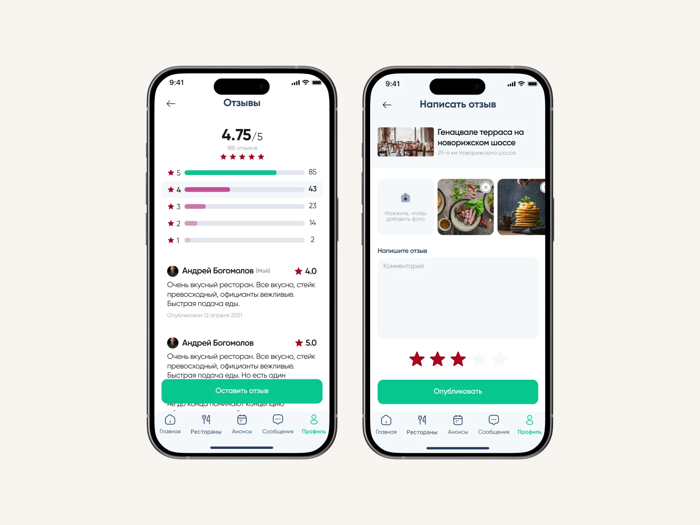

Роль: Product Designer
Discovery • Concept • UX/UI • Бренд • Delivery
Сервис бронирования столиков в ресторанах и барах. Гость выбирает заведение, время и стол, ресторан управляет посадкой. Продукт создан с нуля и вырос до федерального масштаба.
На момент продажи LeClick сотрудничал более чем с 2500 ресторанами и барами в 25 городах России. Продукт лег в основу сервиса бронирования Яндекс.Еды.
Заменить бронь по телефону на сценарий, где гость получает подтверждение сразу, а ресторан видит и контролирует загрузку зала. В двустороннем продукте нельзя оптимизировать одну сторону: гостю нужна скорость, ресторану – заполняемость и предсказуемость.
Начинал с того, как бронь работает без продукта: звонок, блокнот у хостес, ручная сверка. Разбирал, где теряется время и откуда берутся неявки.
Собрал процесс с трех сторон сразу – гостя, хостес и ресторана. Интервью с гостями показывали, чего они ждут от брони; интервью с рестораторами – что для них значит заполненный зал; наблюдение за сменой хостес и разбор бумажных журналов давали то, о чем в интервью не говорят: реальную механику работы в час пик.

Артефакт исследования: карта текущего процесса брони по трем сторонам.
Собрал сценарий, в котором гость получает подтверждение сразу, а ресторан управляет посадкой без ручной сверки. Визуальный язык делал так, чтобы бронь ощущалась как обещание, а не как заявка в справочнике. Продукт живет в двух средах: десктопный сайт для выбора и приложение для брони на ходу.
Список и карта работают как одно целое: гость фильтрует заведения, а карточка ресторана со свободными слотами открывается сайд-шитом – без перехода на отдельную страницу и без потери выдачи.


Клик по карточке ресторана открывает сайд-шит со слотами, меню и отзывами.
В мобильной версии тот же сценарий сжат до нескольких касаний: ближайшие рестораны на карте, выбор времени и стола, подтверждение брони и история броней в профиле.





В двусторонних продуктах выигрывает не тот, кто сделал удобнее гостю, а тот, кто нашел сценарий, где обе стороны получают выгоду в одном действии.